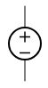
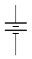

Señales Eléctricas
La electricidad puede ser considerada, a grandes rasgos, casi como un fluido. Antiguamente se pensaba que había, de hecho, 2 tipos de electricidad, positiva y negativa. Luego Benjamin Franklin describió a la electricidad como un fluido de un solo tipo y el exceso o déficit de este fluido podía ser considerado como que es carga positiva o carga negativa. La verdad es que estuvo bastante cerca con su apreciación. Y una de las mejores analogías para los circuitos eléctricos son los circuitos hidráulicos. Es solo una analogía, no siempre funciona bien, pero sirve para empezar a entender mejor cómo funciona la electricidad.
En un rio, el agua pasa de una altura mayor a una altura menor y a medida que se mueve cada partícula de agua, cada molécula de agua va perdiendo energía. De la misma forma, cargas positivas que salen desde el terminal positivo de la batería van perdiendo energía hasta que entran finalmente por el terminal negativo.
Las cantidades físicas sobre las que se fundamenta todo lo que sabemos son voltaje y corriente. El voltaje se designa con la letra V y se mide en volts. (Es como si fuera la altura del agua en un circuito hidráulico), tiene que ver con la energía en los portadores de carga. En un circuito eléctrico el voltaje 0 es arbitrario. Y nosotros definimos el voltaje 0 donde más convenga y ese voltaje 0 le llamamos tierra. Entonces, esa tierra es la referencia arbitraria en torno a la cual medimos el voltaje.
Y luego está la corriente, que se relaciona con el flujo o caudal en un circuito hidráulico, tiene que ver con cuánta agua circula por una sección dada del río en un momento determinado. Tiene que ver con cuántos portadores de carga cruzan una sección del circuito en un tiempo determinado y se mide de manera absoluta, a diferencia del voltaje, que se mide en relación a una tierra, la corriente se mide de manera absoluta.
Voltaje
El voltaje también se le llama tensión. A mayor voltaje en un punto, mayor energía tienen los portadores de carga en ese punto. Los portadores de carga con mayor energía pueden realizar más trabajo útil. Por ejemplo, pueden mover un motor más rápidamente o pueden encender una luz con mayor intensidad. Si 2 objetos con voltajes diferentes llegaran a tocarse producirían un cortocircuito y corriente. Es decir, si tenemos 2 voltajes diferentes que se tocan, hay corriente entre ellos.
| Símbolo | Descripción |
|---|---|

|
Es el símbolo más genérico para una fuente de voltaje en un circuito. Comunmente suele ser una fuente de poder. Es una buena práctica dibujar los signos + y - dentro del círculo. |
Este símbolo se utiliza cuando hay fuentes alternas. Es el símbolo para una fuente de voltaje variable. El garabato dentro del círculo sugiere que este símbolo en particular representa un generador de onda sinusoidal. |
|

|
Este símbolo se utiliza para baterías. La línea horizontal más larga en el símbolo representa la terminal positiva de la batería y la línea horizontal más corta representa la terminal negativa. |
Corriente
La corriente es el flujo de portadores de carga en un circuito. Cuando hay corriente los portadores van cambiando su nivel de energía, cambian de voltaje, es decir, cuando van circulando por un circuito con corriente pierden energía. De la misma forma, que las moléculas de agua en el lecho de un río, cuando fluyen van perdiendo energía. Esa diferencia de energía realmente no se pierde sino que se convierte en otras formas de energía. La corriente fluye a través de conductores eléctricos, dispositivos electrónicos, motores, luces y objetos en general.
Es el símbolo más común para la corriente constante. La flecha indica la dirección del flujo positivo de la corriente.
Señales
Las señales eléctricas llevan información. En general las señales típicamente son de voltaje y no de corriente, varían en el tiempo.
El gráfico muestra la amplitud (el punto más alto que llega el voltaje) que medimos en volts versus tiempo (segundos). En el segundo 0, 1, 2, 3, 4, 5, 6, etcétera, tenemos una señal que va variando de manera continua, es decir que tiene un voltaje que varía de manera continua. Las señales tienen una parte variable y una parte que es constante. La parte variable le llamamos AC y la parte constante le llamamos DC. DC viene de "direct current" o corriente directa. Mientras que la parte AC viene por corriente alterna. La parte DC de una señal es el promedio de la señal en el tiempo. Si nosotros tomamos una señal en el tiempo y promediamos su valor, el valor promedio de la señal es la parte DC y la parte AC es todo lo que sobra. Por lo tanto, si sumamos parte DC más parte AC tendremos la señal completa.
Las señales varían y tienen frecuencia y período. Entonces las señales variables pueden ser descompuestas en una suma de señales fundamentales de diferentes frecuencias. Descomponerlas en sus frecuencias fundamentales resulta sumamente útil para el análisis. Diferentes señales a diferentes frecuencias nos permiten componer cualquier otra señal. Por lo tanto, cualquier señal que se nos ocurra puede ser descompuesta en diferentes frecuencias.
Para describir esta señal en
el tiempo usamos funciones. En este caso A(t) (A de t). A sub 0 es la amplitud (El valor
máximo al que llega esta señal). La constante 2π (2 * pi, es necesaria) y luego viene ƒ (frecuencia) y t (el tiempo),
sumado a Φ (phi, la cantidad de desfase respecto a un valor cero).
El tiempo y la frecuencia tiene que ver con cuántos
ciclos (períodos) ocurren en una unidad de tiempo.
Un ciclo se puede considerar desde un punto inicial a su amplitud máxima,
su amplitud mínima y volver al punto inicial. Lo que se demore la señal en cumplir un ciclo
lo consideramos como t. Este t se mide en segundos.
La frecuencia es . Por lo tanto este ƒ va a ser
1 partido por el período. Luego Φ es el desfase y
tiene que ver con cuánto más adelante o atrás está esta
señal respecto de un 0.
Existen 3 valores importantes en una señal sinusoidal, amplitud, frecuencia y fase. Y si nosotros sumamos muchas señales sinusoidales terminamos con cualquier señal arbitraria que se nos pueda ocurrir. Las señales eléctricas también pueden realizar acciones, no solamente nos permiten procesar información.